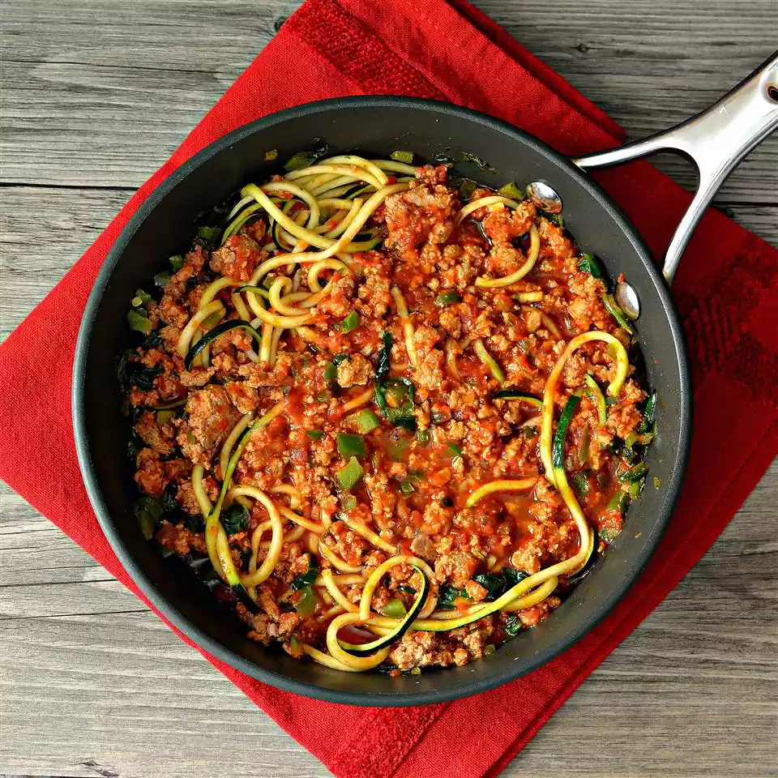

Turkey Spaghetti Zoodles

Simple desctription
A super simple one-pot dinner that's low calorie, low carb, paleo, gluten-free and takes just 10 minutes to make.
This will be your go-to week night dinner! Serve immediately or store in the refrigerator up to 3 days.
Ingredient you need
- 1 teaspoon extra-virgin olive oil
- 1 ¼ pounds ground turkey breast
- 1 cup diced green bell pepper
- 1 tablespoon minced garlic
- 2 teaspoons Italian seasoning
- ½ teaspoon ground black pepper
- ¼ teaspoon salt, ¼ teaspoon red pepper flakes and 3 cups marinara sauce
- 2 cups baby spinach leaves
- 4 zucchini, cut into noodle-shape strands
Steps
- Heat olive oil in a large skillet over medium heat.
Add turkey breast, green pepper, garlic, Italian seasoning, ground black pepper, salt, and red pepper flakes;
cook and stir until turkey is lightly browned, 4 to 5 minutes.
- Stir marinara sauce and baby spinach into the turkey mixture;
cook and stir until marinara sauce is warm through, about 3 minutes.
-
Stir zucchini noodles into the sauce with tongs;
cook and stir until the zucchini is slightly tender, 2 to 3 minutes.
back to homepage